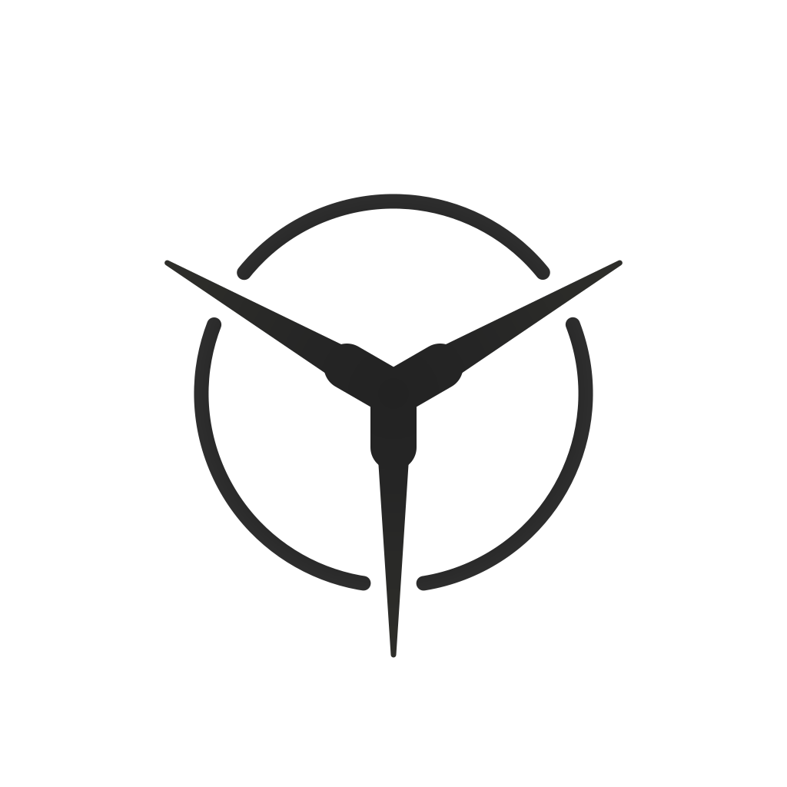

yaokit logo — v1 vs v2
圆角三岔口方案：中心圆点 → 圆角 Y 字汇流核。三条射线在中心自然分流，内角圆角处理。
v1 — 中心圆点
三段圆环 + 三条射线 + 中心圆形 hub
v2 — 圆角 Y 汇流核
三段圆环 + 三条圆角分流射线，中心无圆点

v2 迭代
v1 → v2 变更：
移除中心
r=34 圆点 hub，改为 stroke-based Y 字汇流核。
三条分支以 stroke-width=60 的圆角连接线
（stroke-linejoin="round"）穿过中心汇合，
内角由渲染器自动圆角。 上部分支体宽 48px（hw=24），
下部分支体宽 42px（hw=21）以补偿光学偏重；
下部肩部过渡区 d=70（上部 d=55）使中心过渡更平滑。
均经线性锥削收窄至 7px（尖端）。
中心以径向渐变遮罩（45% 不透明度、r=29）柔化密度，
渐变色 #222→#2e2e2a 减轻中心视觉重量。
外环参数不变。整体观感：中心不再是独立圆点，而是三条射流自然分流汇合的圆角三岔口。